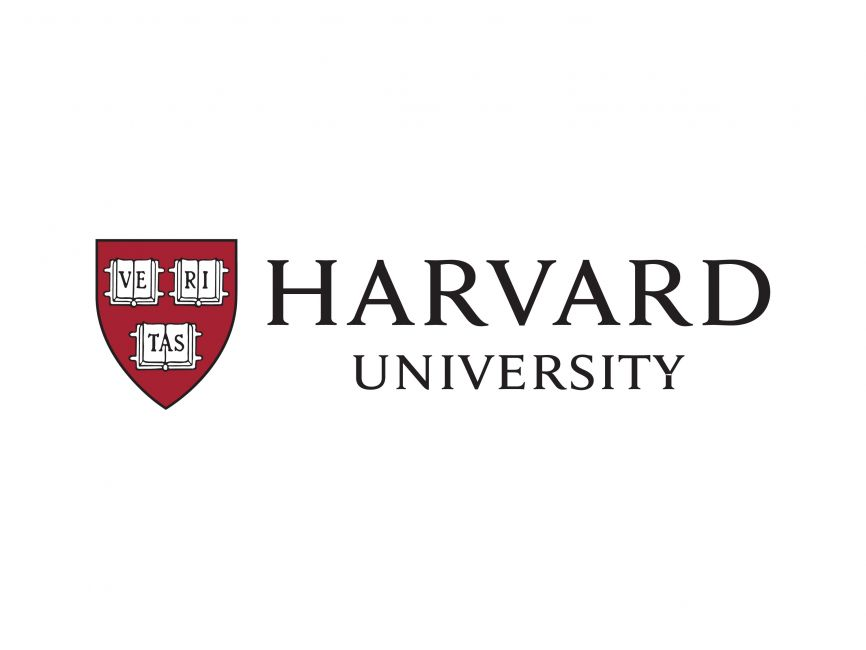
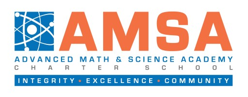

Johns Hopkins University
I am attending Johns Hopkins University in Baltimore, MD majoring in biomedical engineering and minoring in financial economics. I am actively pursuing research and internship opportunities here.
During freshman year, I worked under the guidance of Dr. Adrian Haith, Ph.D. researching motor skills learning in humans at the Brain, Learning, Animation, and Movement Laboratory (Johns Hopkins Medical Institutions); conducted human trials.
Relevant Coursework
- AS.030.101Introductory Chemistry I
- AS.030.105Introductory Chemistry Laboratory I
- AS.180.101Elements of Macroeconomics
- AS.220.105Introduction to Fiction & Poetry I
- EN.501.124FYS: Design Cornerstone
- EN.580.111Biomedical Engineering: Health and Human Physiology
- EN.601.226Data Structures
- AS.030.102Introductory Chemistry II
- AS.030.106Introductory Chemistry Laboratory II
- AS.180.242International Monetary Economics
- EN.553.311Intermediate Probability and Statistics
- EN.580.112Design Team Health-Tech Project II
- EN.580.151Cellular and Molecular Foundations
- AS.180.263Corporate Finance
- AS.180.301Microeconomic Theory
- EN.580.221Biochemistry and Molecular Engineering
- EN.580.240Introduction to Biomedical Data Science
- EN.580.243Linear Signals and Systems
- EN.601.464Artificial Intelligence
Massachusetts Institute of Technology
During summer 2023, I attended MIT Beaverworks Summer Institute where I completed a project on autonomous underwater vehicles.
Massachusetts Academy of Math and Sciecnce at Worcester Polytechnic Institute
For my second half of high school, I attended the Massachusetts Academy of Math and Science at Worcester Polytechnic Institute in Worcester, MA. Mass Academy is a dual enrollment program for grades 11-12 with WPI where students are fully enrolled at WPI during their senior year.

Relevant Coursework
- APAP Physics C: Mechanics
- APAP Physics C: Electricity and Magnetism
- MA 1023Calculus III
- MA 1024Calculus IV
- CH 1010Chemical Properties, Bonding, and Forces
- MA 2201Discrete Mathematics
- BME 1001Introduction To Biomedical Engineering
- EN 1219Introduction to Creative Writing
- ECON 1110Introductory Microeconomics
- MA 2071Matrices And Linear Algebra I
- MA 2051Ordinary Differential Equations
- BME 2210Biomedical Signals, Instruments And Measurements
- EN 2219Creative Writing
- MA 2611Applied Statistics I
- BME 2211Biomedical Data Analysis
- ETR 491XSports Analytics and Entrepreneurship
Harvard University
In the summer of 2022, I spent two weeks taking a bioinformatics course at Harvard University. I had an incredible experience meeting and learning with people from around the world. My final presentation was on CRISPR-Cas9's impact on treating sickle cell disease.

AMSA Charter School
Before transferring to Mass Academy, I spent the first two years of high school at AMSA Charter School.
Relevant Coursework
- APAP Calculus BC
- APAP Computer Science A
